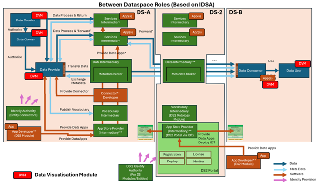
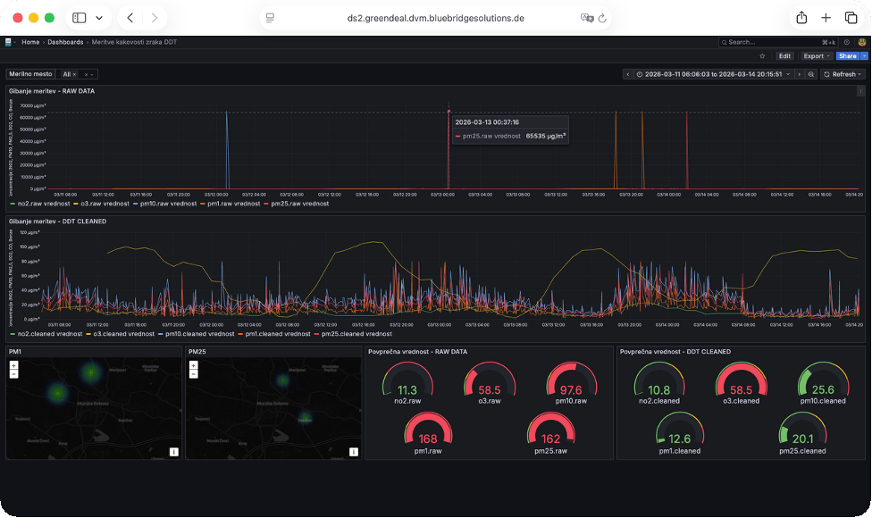

DVM - Data Visualisation Module
Powered by
| Project Links |
|---|
| Software GitHub Repository https://github.com/ds2-eu/dvm.git |
| Progress GitHub Project https://github.com/orgs/ds2-eu/projects/56 |
General Description
Purpose: DVM provides visualisation functionalities in order to enhance the presentation and communication capabilities and facilitate a better understanding of raw data by means of graphical analysis.
Architecture
The figure below represents the module fit into the DS-DS environment.

Component Definition
This module has the following subcomponent and other functions:
-
Core (Designtime): User interface to define dashboards, configure data sources for widgets, access control, etc.
-
Core (Runtime): User interface for showing dashboards as well as a backend for data ingestion.
External Components Used - Data Source: Data may be streamed from use case partners or developers. Modules E2C and DDT can be configured to stream data to DVM.
- Information Consumer
- Data providers
- Data consumers
- Module developers
External Interaction - User:: DVM provides dashboarding functionalities to it's users. Users can create dashboards, configure widgets, manage data ingestion and view data using the created dashboards.
Screenshots

Commercial Information
| Organisation (s) | License Nature | License |
|---|---|---|
| bluebridgesolutions UG (haftungsbeschränkt) | Open Source | Apache 2.0 |
Top Features
1. Data visualisation: Visualisation of data for data producers and consumers.
2. Flexible configuration of dashboards: Adding of new charts for time series data and KPIs by configuration of widgets.
3. Enhanced visual analytics: Visualisation simplifies the analysis of data, trends and outlier detection for humans.
4. Visualisation of processing results: Modules like DDT produce data such as smoothing of sensor data. DVM is an easy way of visualizing such results.
How To Install
1. IDT based installation
You can purchase and install DVM in IDT. Please follow the IDT documentation for buying and installing modules.
2. Run container
DVM is distributed as a docker image. To run a DVM container, first make sure that you have Docker installed on your machine.
Then run the following command:
This will download the image from BBS's docker repository and run the container exposing port 3000.This concludes the installation. Once the container has started, you can access DVM's user interface by following the link http://localhost:3000/login.
Requirements
No specific requirements.
Software
A current Docker installation is required.
Summary of installation steps
- Setup Docker if not yet installed
- Run DVM container
How To Use
Open the user interface by following the link http://localhost:3000/login. Default credentials are username "admin" and password "admin". You will be prompted to set a new password which is recommended.
There, you can setup data sources as well as create and view dashboards as required.
For a further reference on how to create dashboards, please also refer to this documentation.
Other Information
No other information for DVM.
OpenAPI Specification
N/A
Additional Links
N/A